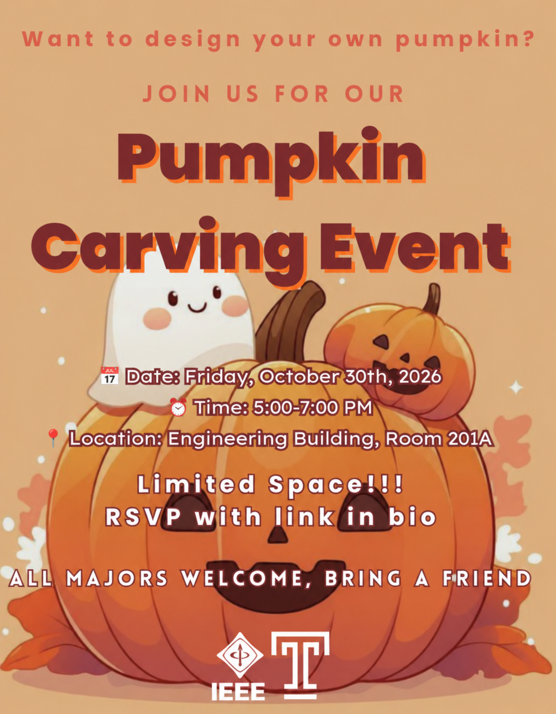
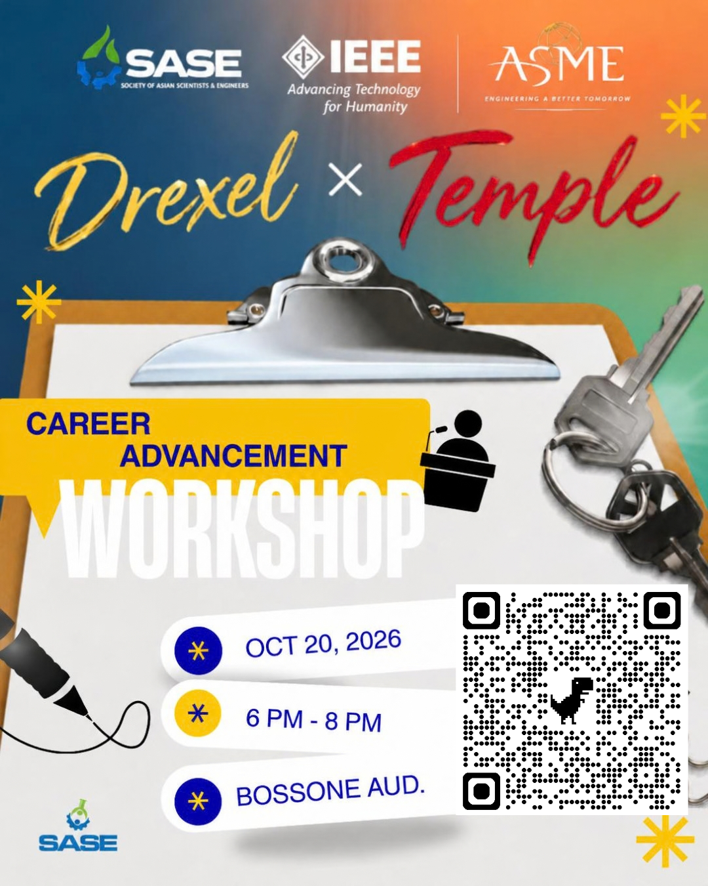
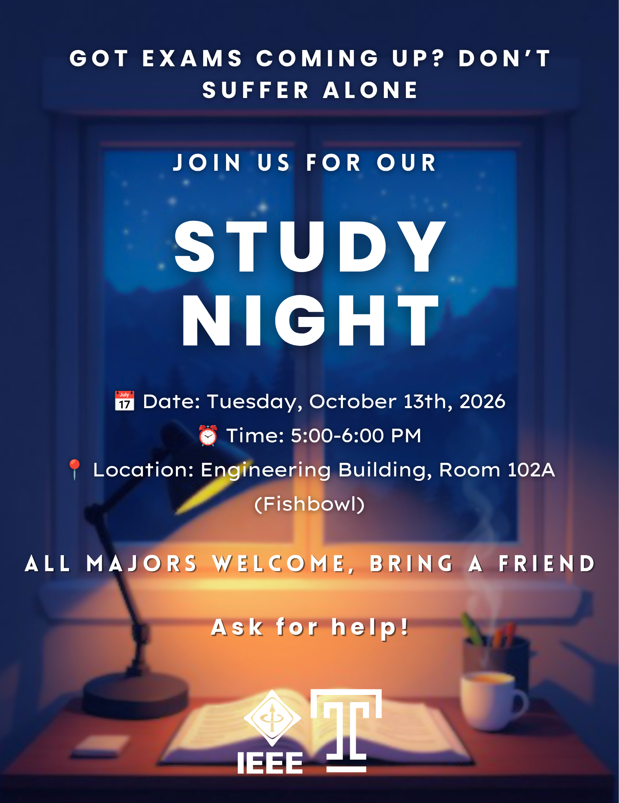
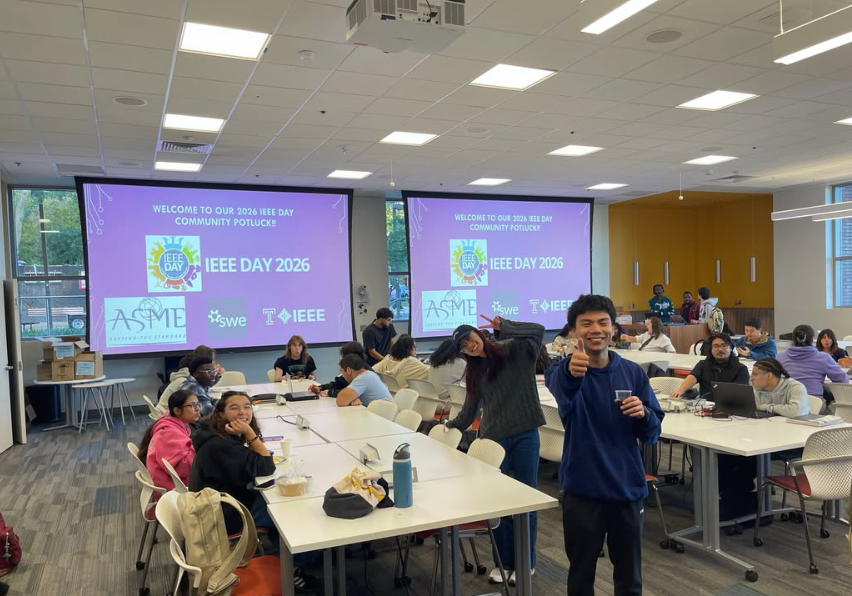
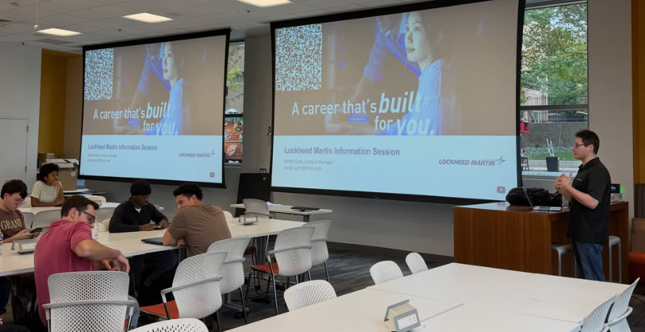
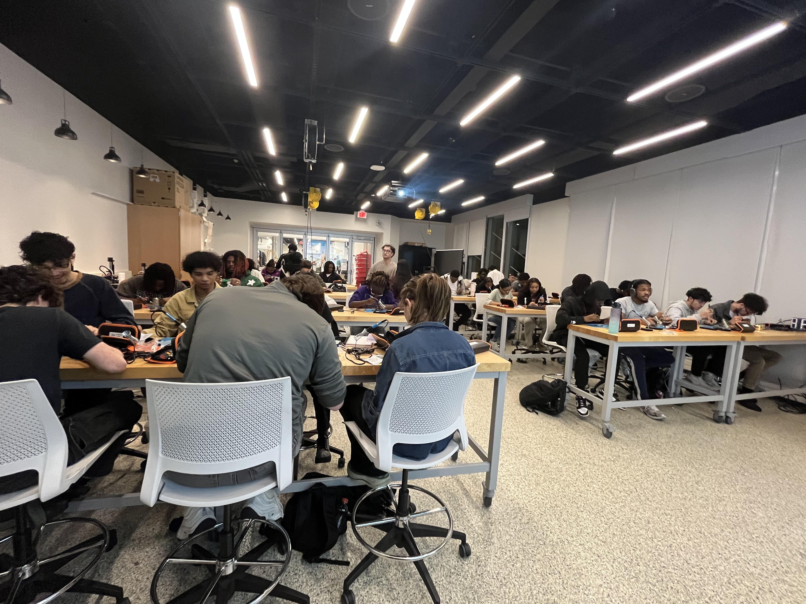
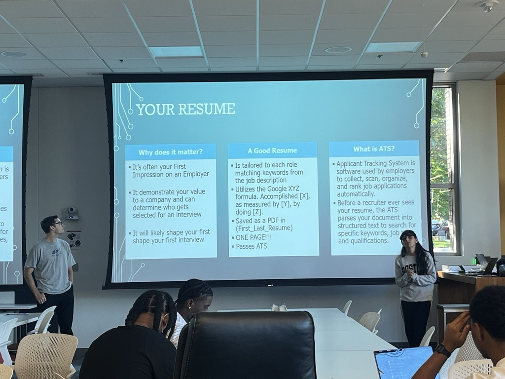
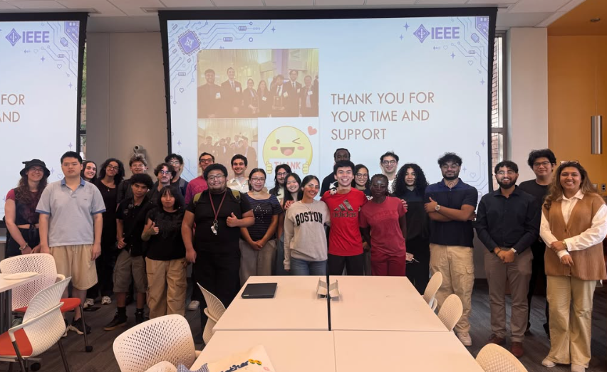

Oct 2026 WorkshopPumpkin Carving Event
Students designed Halloween pumpkins and illuminated them using PCBs they soldered themselves.
Oct. 30 · 5:00–7:00 PM
Engineering 201A

Oct 2026 WorkshopStudents designed Halloween pumpkins and illuminated them using PCBs they soldered themselves.

Oct 2026 CareerTemple IEEE joined Drexel for a workshop focused on career development, professional growth, and advancement opportunities.

Oct 2026 AcademicStudents gathered for an evening of focused studying, peer support, and collaboration.

Oct 2026 SocialThe Temple IEEE community celebrated IEEE Day with food, conversation, and community building.

Sep 2026 CareerStudents learned about career opportunities, company culture, and pathways into the engineering industry.

Sep 2026 WorkshopTemple IEEE and NSBE led a hands-on introduction to soldering fundamentals.

Sep 2026 CareerStudents learned how to build stronger resumes and received practical, personalized advice.

Sep 2026 GBMTemple IEEE introduced its community, chapters, semester plans, and ways for students to get involved.